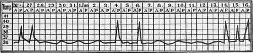

Relapses; Reinfections
Description
This section is from the book "Malaria, Influenza And Dengue", by Julius Mennaberg and O. Leichtenstern. Also available from Amazon: Malaria, influenza and dengue.
Relapses; Reinfections
Malaria is one of those infectious diseases in which a relapse may be considered an essential feature. In this respect it resembles most closely acute articular rheumatism. It is a daily observation to see a man who has passed through a series of malarial paroxysms, one, two, three, or more weeks later manifest one or several paroxysms, and it makes little difference whether the first disease recovered spontaneously or was cured by the action of quinin. This may be repeated several times, and we frequently see persons who have acquired their primary infection in summer or autumn tormented the whole winter, even to the subsequent spring, by occasionally recurring paroxysms. The appreciation of this inclination was the origin of the therapeutic procedure of combating the anticipated relapse by a few doses of quinin, which are ordinarily administered two or three weeks after the last paroxysm.
We wish expressly to insist that we mean by relapse the reawakening of the disease symptoms by parasites that have remained in the organism from an earlier period. These relapses must be sharply separated from reinfections-that is, new infections of the organism after it was free of parasites.
It is clear that in concrete cases this is not always possible. When we have to do with people who continue to reside in a malarial region after a previous attack, we are naturally often unable, by our present methods, to determine whether the new fever has been caused by the old parasites in the mean while latent, or by a reinfection, for which there is ample opportunity. This separation can be made with certainty only when the blood examination in the second case shows a species of parasite different from that which occurred in the first, in which case it is evident that we have to do with a reinfection.
It is also quite as clear when a person who was infected in a malarial region suffers later from repeated attacks in a locality free from malaria . In this case we have to do naturally with a positive relapse. There are even sufficient grounds for the diagnosis of a relapse when a person confined to a well located hospital manifests new fever paroxysms.
Relapses are seen in cases of fever of the first as well as of the second group, though in the latter they are more frequent and obstinate. Among the first group quartan relapses occur more frequently than tertian.
For a long time no effort has been spared to find a rule for the occurrence of relapses.
Werlhof claims to have found that tertian fever usually recurs in the second, quartan in the third, week, and on those days on which a paroxysm would have occurred if there had been an uninterrupted continuance of the fever.
Barudel drew, from the investigation of a large amount of material, that quotidian fever relapsed most commonly on the seventh day, tertian on the fourteenth, quartan on the twentieth.
According to Borius, relapses occur preferably on the seventh, fourteenth, twenty first, and twenty eighth days. Among 226 cases observed in Senegal, 128 had regular relapses, and of these, 18 on the seventh, 64 on the fourteenth, 31 on the twenty first, 9 on the twenty eighth day. Ninety eight cases relapsed differently (ninth, tenth, sixteenth, twentieth day). Borius remarks that all these people took quinin in the interval, and he is convinced that the relapses, in the majority of cases, occurred on account of stopping it.
Fig. 37.-Relapse of Septan Type (after Livio Vincenzi).
Dudon observed in the quotidian fevers of the east coast of Africa that relapses occurred almost regularly on the seventh day. As a matter of curiosity, we add that a few decads ago (even to day by some physicians) relapses were associated with the phases of the moon. Experience has shown that these rules do not apply to a large number of cases-in other words, the exceptions are more frequent than the regular types.
It sometimes happens that several relapses follow one another at regular intervals-for instance, relapses have been occasionally observed showing one or several paroxysms, every seven or eight days, and the interval may be longer, even to a month. Livio Vincenzi, who has devoted considerable attention to relapses, saw several cases with intervals of seven days. Fig. 37 has been taken from his publication. This case was a woman who was attacked by quotidian fever in October, with a relapse in December. The curve in the figure shows that two further relapses followed, with seven days' interval. The blood examination discovered small ameboid parasites without crescents. At the time of the apyrexia parasites were missed from the blood for several days at a time.
With such regularity in the relapse there is an inclination to assume that we have to do with a type standing in a genetic relation to the evolution of the parasites. This was the conclusion of the older writers when they spoke of septan, octan, monthly, etc., types. Even Golgi considered them as types associated with the life cycle of special parasites, and designated then as "Febbri malariche a lunghi intervalli." Yet when we consider that this regularity is only exceptional, that in the same case the relapses occur after longer and shorter intervals, that the blood examination, especially from the spleen, shows parasites with a life cycle of from twenty four to forty eight hours, we must repudiate this idea and speak not of fevers with long intervals, but of relapses. Moreover, on ceasing the administration of quinin, we see these fevers with long intervals change to tertian or quotidian (Bestion). Borius, for instance, mentions that his cases, which relapsed on the twenty first day, were given quinin as a prophylactic on the seventh and fourteenth. We repeat, therefore, again that we are not justified in speaking of fevers with long intervals, or fevers of septan type, since they are only relapses. The general experience is that relapses occur in the beginning in shorter, later in gradually lengthening, intervals.
Continue to:
- prev: Acute Malaria In Children And Old People. Continued
- Table of Contents
- next: Relapses; Reinfections. Continued
Tags
mosquito, malaria, influenza, dengue, symptoms, outbreaks, diseases, hemoglobinuria, infections